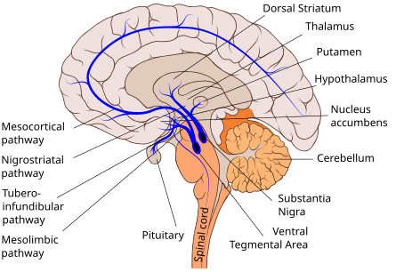

뇌의 도파민 회로 — VTA에서 시작해 전두엽·선조체로
도파민이 쾌감 호르몬이라는 건 절반만 맞는 말입니다. 1997년 슐츠의 원숭이 실험이 진짜 역할을 밝혔습니다.
① 예상 못 한 보상 → 도파민 왕창 분비.
② 반복해서 신호+보상 → 도파민이 신호가 뜰 때 분비(보상 때는 조용).
③ 신호 떴는데 보상 없음 → 도파민 뚝 떨어짐.
즉 도파민은 "예측이 틀렸다"는 알림입니다. 기대한 것보다 더 좋으면 +, 기대 이하면 −. 이 차이가 학습을 만듭니다.